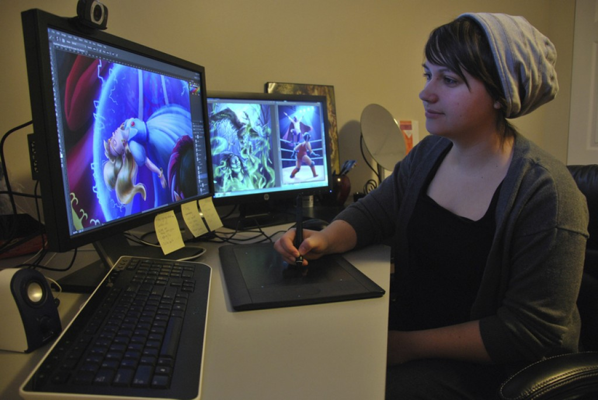
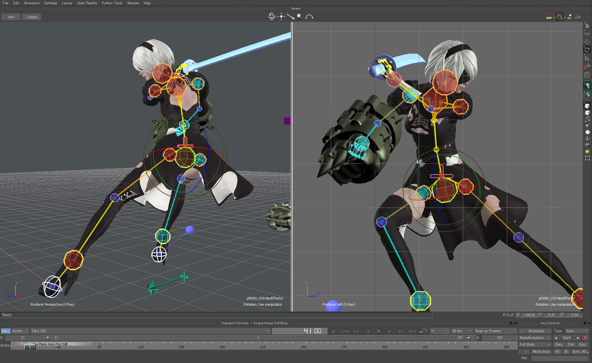
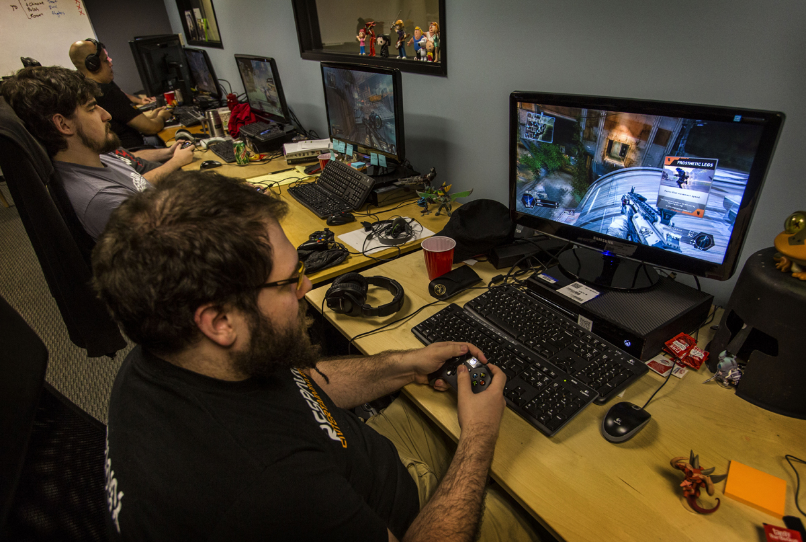

Most people probably don't realize or think about it, but there are are numerous roles that make up a team of video game developers. Common roles that are involved with developing a video game include, but are not limited to:
- Project Manager
- Writer
- Game Designer
- Game Programmer
- Game Artist
- Animator
- Audio Engineer
- Quality Assurance
Note: Besides for small companies where there are only a few employees, these roles will generally have several people in the same position. In that case, someone will be assigned the lead role, where they will micromanage their fellow role sharers.
Project Manager
A project manager is someone who is tasked with managing and leading the entire team.
The goal of a project manager is to ensure that the team is running smoothly and efficiently.
They will set goals and deadlines to meet, and make sure that the team meets the deadlines.
It's important to have someone specifically focusing on managing the team as opposed to
splitting that responsibility among the team members themselves. This way, it's more
efficient and keeps everyone else focused on their own respective tasks as well.
Writer
The role of the writer is usually to create the storyline of the video game.Often, video
games have some sort of plot that the main character follows. Some plots are simple while
others are very detailed. The writer does not create only the plot of the game, but also
the characters, setting, and even character dialogue.
Like the project manager, the responsibilities of the writer is often overlooked. Although
the task of developing a plot can be done by anyone else on the team, it is better to assign
someone who has worked extensively on their writing and story-telling skills. That makes this
another general task that the other team members won't have to worry about.
Game Designer
The game designer is in charge of the design of the game. This person (or people) decide/s the
core functions of the game, such as what should be included and how it should be interacted with.
This is yet another general role that is usually divided by the team members. As always,
it is always nicer to have a separate person focusing specifically on a single task.
Game Programmer
Game programmers are probably the people that pop into mind when thinking of video game development. Programmers are vital as they are the ones in charge of writing the code that actually makes the game function. Without a programmer, ideas will only stay ideas.

Game Artist
A game artist is a person who creates the artwork for the game. This ranges anywhere from characters to backgrounds and scenery. Anything seen on the screenis created by a game artist (although the following role will play another part in that). Since technology has come such a long way, most drawing tools that artists use nowadays are digital.

Animator
In contrast to a game artist, an animator is the person who brings the artwork to life. Whether the game is in 2D or 3D, an animator will be the one behind all the movement that is seen on screen.
Audio Engineer
The audio engineer role is often taken for granted. Not too many people notice, or appreciate, the sounds that are heard within a game. This includes any background music playing, sound effects, and even dialogues.

Quality Assurance
Someone who manages the quality assurance task of a video game is essentially the main tester of the video game development process. Their job is to test the game by playing it, looking for any bugs. It is their responsibility to assure that the game is running as it should be; if not, they should report any bugs so that they may be fixed before an official release.